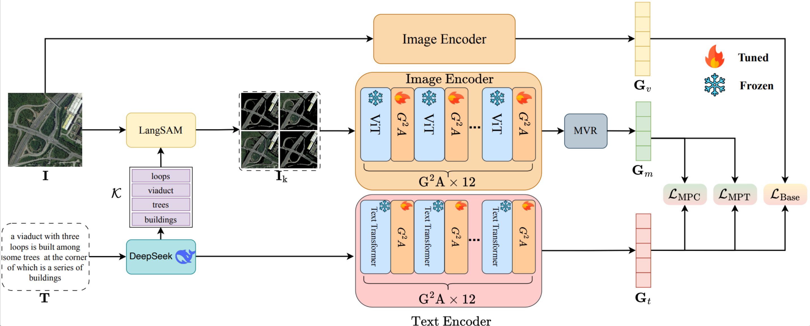
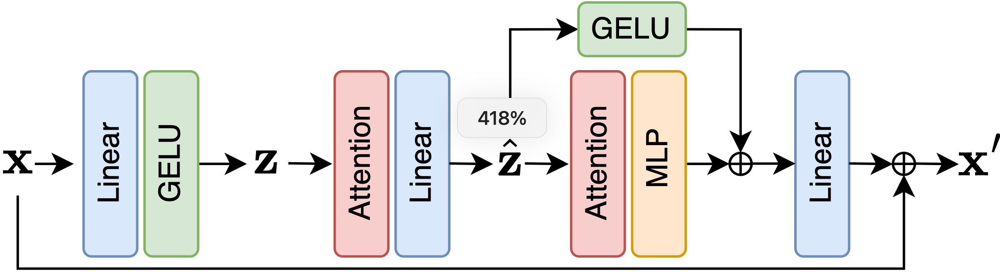
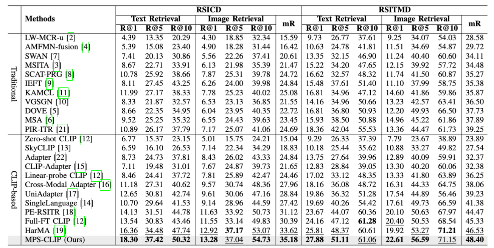

Multi-Perspective Subimage CLIP with Keyword
Guidance for Remote Sensing Image-Text Retrieval
1Institution A
2Institution B
3Institution C
Abstract
In this work, we propose Multi-Perspective Subimage CLIP with Keyword Guidance, a framework tailored for remote sensing image-text retrieval. By leveraging multiple subimages from different perspectives and incorporating keyword-based textual guidance, our method enhances the alignment between visual and textual representations in complex remote sensing scenes. The proposed model exploits both fine-grained local structures and global contextual information and is further equipped with an adapter module that efficiently bridges pre-trained CLIP features with task-specific retrieval objectives. Extensive experiments on multiple benchmark datasets demonstrate the effectiveness of our approach in improving retrieval accuracy and robustness.
Methodology

Overall pipeline of the proposed Multi-Perspective Subimage CLIP with keyword guidance for remote sensing image-text retrieval.

Illustration of the adapter module that integrates multi-perspective subimages and textual keywords into CLIP for efficient retrieval.

Visualization of text features and keyword guidance for remote sensing image-text retrieval.

Visualization of image features obtained from multi-perspective subimages in remote sensing scenes.
Experimental Results
Quantitative and qualitative comparisons with state-of-the-art methods on remote sensing image-text retrieval benchmarks.

Experimental results of the proposed method compared with existing approaches on multiple datasets.